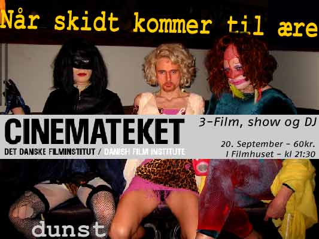

| 18. September 2003 |
dunst visar film från Åre Gay Days

Från filmen Heat Swede
På lördag (20 september) blir det film och fest på Cinemateket
i Köpenhamn. Performancegruppen Dunst visar tre filmer och efter
det blir det show och DJ:s som håller festen rullande.
De tre filmerna som visas är "Heate Swede", där vi
får följa Dennis Agerblad, Puta
och Ramon Macho när de är på skidferie
i Åre under Åre Gay Days tidigare i år.
"I Like to watch", av Chris Korda (2001). Korda
är en av grundarna av den amerikanska frikyrkan Church of Euthanasias
vars fyra grundstenar är "kannibalism, sodomi, abort och självmord"
- allt i en protest mot jordens överbefolkning. Filmen visades på
kyrkans hemsida omedelbart efter den 11 september. En provokation där
amerikansk football, flugplanens kraschar i World Trade Center, sprutscener
och "andra amerikanska värden" mixas.
"Legenden om Leigh Bowery" av Charles Atlas
från 2002 handlar om Londons nattklubbscen med modeskaparen, musikern
och performanceartisten Bowery i centrum.
Efter filmerna, som slutar ca 22.30 blir det fullt fest på kvällens
tema När skidt kommer till ære!
Jon Voss
Reference:
http://qx.se/nyheter/artikel.php?artikelid=2578
Print denne side